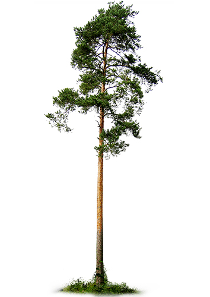

Yhteystiedot
Meidän tarinamme
Kauan, kauan sitten eräässä metsässä, joka oli täynnä elämää ja salaisuuksia, tapahtui tarina puista. Kaikki alkaa pienestä siemenestä, joka löysi tiensä pehmeän mullan syvyyksiin.
Siemen makasi hiljaa ja odotti kärsivällisesti, kun aurinko lämmitti maata ja sade kostutti sen ympärillä olevaa maata. Pian, pieni juuri alkoi kasvaa, etsien tietään kohti valoa. Siitä tuli ensimmäinen vaihe puun elämänkaaressa, pieni itu, joka kasvoi päivä päivältä.
Nuori puu, joka oli nyt vain muutaman vuoden vanha, laajensi juuriaan syvemmälle maahan ja kurotti kohti taivasta. Se oppi kilpailemaan muiden kasvien kanssa valosta ja ravinteista. Vuosien mittaan siitä tuli kaunis puu, joka tarjosi suojaa monille eläimille ja lintulajeille. Puu oli täynnä elämää, ja se kasvoi vahvaksi ja terveeksi.
Mutta ajan mittaan tuuli ja sää alkoivat vaikuttaa siihen. Puu menetti muutaman oksan myrskyissä ja sateissa, mutta se ei antanut periksi. Se kasvoi hitaasti ja vakaasti, ja sen vuosirenkaat kertoivat tarinaa sen elämästä.
Lopulta päivä koitti, kun puu oli tullut vanhaksi ja heikoksi. Se oli kokenut monia vuodenaikoja ja nähnyt paljon elämää ympärillään. Sitten eräänä päivänä, vanhentuneena ja väsyneenä, puu kaatui maahan. Se oli päättänyt elämänsä metsässä.
Mutta tämä ei ollut loppu. Puun kaaduttua sen runko alkoi hiljalleen maatua. Sen aineet hajosivat maahan, ja siitä tuli osa metsän ravintoketjua uudella tavalla. Puu tarjosi ravinteita ja suojaa sienille, hyönteisille ja monille muille elämänmuodoille. Se eli jatkossakin, vaikka eri muodossa.
Ja niin tarina puusta päättyi, mutta samalla se jatkoi elämäänsä osana luonnon suurta pyörrettä. Se oli osa metsän tarinaa, osa maailman tarinaa, joka jatkoi kiertokulkuaan iankaikkisesti.